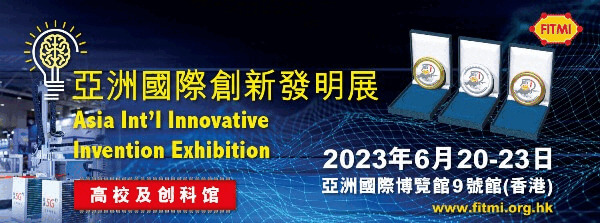

<?xml version="1.0" encoding="UTF-8"?><rss version="2.0"
	xmlns:content="http://purl.org/rss/1.0/modules/content/"
	xmlns:wfw="http://wellformedweb.org/CommentAPI/"
	xmlns:dc="http://purl.org/dc/elements/1.1/"
	xmlns:atom="http://www.w3.org/2005/Atom"
	xmlns:sy="http://purl.org/rss/1.0/modules/syndication/"
	xmlns:slash="http://purl.org/rss/1.0/modules/slash/"
	>

<channel>
	<title>papercom &#8211; 訊通展覽公司</title>
	<atom:link href="" rel="self" type="application/rss+xml" />
	<link>https://www.paper-com.com.hk/cn</link>
	<description>Paper Communication Exhibition Services</description>
	<lastBuildDate>Fri, 22 Nov 2024 04:22:32 +0000</lastBuildDate>
	<language>zh-Hans</language>
	<sy:updatePeriod>
	hourly	</sy:updatePeriod>
	<sy:updateFrequency>
	1	</sy:updateFrequency>
	<generator>https://wordpress.org/?v=6.8.1</generator>

<image>
	<url>https://www.paper-com.com.hk/wp-content/uploads/2019/02/cropped-papercom-32x32.png</url>
	<title>papercom &#8211; 訊通展覽公司</title>
	<link>https://www.paper-com.com.hk/cn</link>
	<width>32</width>
	<height>32</height>
</image> 
	<item>
		<title>DMP大湾区工业博览会 • 香港</title>
		<link>https://www.paper-com.com.hk/cn/blog/dmpshow2023-hk/</link>
		
		<dc:creator><![CDATA[papercom]]></dc:creator>
		<pubDate>Tue, 26 Mar 2024 03:35:16 +0000</pubDate>
				<category><![CDATA[展览项目]]></category>
		<guid isPermaLink="false">https://www.paper-com.com.hk/?p=9211</guid>

					<description><![CDATA[　 　 DMP 大灣區工業博覽會•香港展示工業界驕人成就同期舉行創科論壇、創新發]]></description>
										<content:encoded><![CDATA[<div align="center">
<div class="su-row">
<div class="su-column su-column-size-1-1"><div class="su-column-inner su-u-clearfix su-u-trim">
<div style="padding: 5px; background-color: #03A9F4; color: #ffffff; font-size: 20px;"><strong>场刊</strong></div>
</div></div>
</div>
<div class="su-row">
<div class="su-column su-column-size-1-2"><div class="su-column-inner su-u-clearfix su-u-trim">
<div align="center"></a></div>
</div></div>
<div class="su-column su-column-size-1-2"><div class="su-column-inner su-u-clearfix su-u-trim">
<div align="center"></a></div>
</div></div>
</div>
<div class="su-row">
<div class="su-column su-column-size-1-2"><div class="su-column-inner su-u-clearfix su-u-trim">
<div align="center"><a href="https://download.wezhan.cn/contents/sitefiles2046/10231185/files/706598..pdf?response-content-disposition=inline%3Bfilename%3D%25e6%25b7%25b1%25e5%259c%25b3%25e5%258c%25bb%25e7%2596%2597%25e5%2599%25a8%25e6%25a2%25b0%25e5%25b1%2595-%25e9%25a6%2599%25e6%25b8%25af%25e7%25ab%2599%25e7%2594%25b5%25e5%25ad%2590%25e4%25bc%259a%25e5%2588%258anew%281%29%282%29.pdf&#038;response-content-type=application%2Fpdf&#038;auth_key=1711442989-b131325a9a244e1e9a4e7c8ecb72904d-0-1ce53568a709c196e552a107d51250d3" target="_blank" rel="noopener"></a></div>
</div></div>
<div class="su-column su-column-size-1-2"><div class="su-column-inner su-u-clearfix su-u-trim">
<div align="center"></a></div>
</div></div>
</div></div>
<p>　</p>
<div align="center"></div>
<p>　</p>
<div align="center">
<h4>DMP 大灣區工業博覽會•香港展示工業界驕人成就<br />同期舉行創科論壇、創新發明展等多項活動</h4>
</div>
<p>　<br />
　　香港特区政府将致力推动创科发展，设立100亿元「产学研1+计划」，壮大人才库，建设智能香港，融入国家发展，打造香港成为国际创新科技中心。此外，政府已向创新及科技基金注资港币20亿元成立「再工业化资助计划」，为在香港设立智能生产线的制造商提供配对资助；在工业邨建立先进制造业设施，以鼓励更多高增值及高科技生产制造商在香港设立工厂。通过发展先进智能制造技术，实现香港再工业化，可减轻香港经济对服务业的依赖。<br />
　<br />
　　「讯通」凭借30多年筹办工业范畴展览会经验与各大专业协会紧密联系，已经成为香港与粤港澳大湾区的工业与经济发展的一道桥梁。「讯通」将于2023年6月20-30日会在香港亚洲国际博览馆，主办 “DMP大湾区工业博览会•香港” 展示主题包括创新科技，智能制造，再工业化等，并配合香港特区政府推动科研、招商引资引才、开拓青年视野。</p>
<h4>展览范围</h4>
<ul>
<li><strong>智能制造机械人</strong><br />焊接机器人、喷涂机器人、搬运机器人、装配机器人、智能仓储机器人及系统、驱动系统</li>
<li><strong>传动及感应装置</strong>精密减速器、控制器、伺服电机、步进电机、夹具/抓手、气缸及液压缸、机器视觉系统及组件、直线运动/导轨设备、滚珠花键、滚珠丝杠和连杆球</li>
<li><strong>工业自动化核心智能系统</strong><br />组装及搬运系统/线性定位系统、工业图像处理系统、工业用计算机通讯、网络和现场总线系统、嵌入式系统、传感器和执行器、工业测量和测试系统、工业自动化数据获取及辨别系统、激光技术、自动化服务、空压技术与设备</li>
<li><strong>工业电气及机械零部件</strong><br />电气系统变压器、电池和不断电源、伺服电机和变频器、轴承、齿轮、联轴器等传动部件、机械驱动系统、电线及电缆附件/连接器、线束、电气控制系统用电气开关装置和设备、电工及光学部件、电力电工测试和检测设备，各类工厂自动化零部件等</li>
</ul>
<p>　</p>
<h4>主办单位</h4>
<ul>
<li>讯通展览公司</li>
<li>广东讯展会议展览有限公司</li>
<li>上海讯展会议展览有限公司</li>
<li>东莞讯通会议展览有限公司</li>
<li>深圳讯通展览有限公司</li>
</ul>
<p>　<br />
<br />Widget not in any sidebars<br /><span data-mce-type="bookmark" style="display: inline-block; width: 0px; overflow: hidden; line-height: 0;" class="mce_SELRES_start"></span><span data-mce-type="bookmark" style="display: inline-block; width: 0px; overflow: hidden; line-height: 0;" class="mce_SELRES_start"></span><span data-mce-type="bookmark" style="display: inline-block; width: 0px; overflow: hidden; line-height: 0;" class="mce_SELRES_start"></span></p>
]]></content:encoded>
					
		
		
			</item>
		<item>
		<title>广州精稳工业制品有限公司</title>
		<link>https://www.paper-com.com.hk/cn/blog/booth23-5a16/</link>
		
		<dc:creator><![CDATA[papercom]]></dc:creator>
		<pubDate>Wed, 28 Jun 2023 10:00:43 +0000</pubDate>
				<category><![CDATA[DMPhk展商連結及預告]]></category>
		<guid isPermaLink="false">https://www.paper-com.com.hk/?p=8661</guid>

					<description><![CDATA[广州精稳工业制品有限公司，简称“精稳五金”，始创与2006年，主要生产及销售工业五金结构件，服务各类工业自动化设备生产厂商，面向企业供应超过40,000款不同款式的现货（涵盖搭扣、锁、铰链、支撑、锁扣、拉手、磁吸、夹具、插销、汽车配套件等）配套选择，实现产品配件的一站式采购；提供基于现货的小批量产品改良定制和基于设计图纸或样品的产品量身定制服务，根据需求制造符合客户安装使用标准的产品，接受OEM及ODM产品委托。]]></description>
										<content:encoded><![CDATA[<p>广州精稳工业制品有限公司，简称“精稳五金”，始创与2006年，主要生产及销售工业五金结构件，服务各类工业自动化设备生产厂商，面向企业供应超过40,000款不同款式的现货（涵盖搭扣、锁、铰链、支撑、锁扣、拉手、磁吸、夹具、插销、汽车配套件等）配套选择，实现产品配件的一站式采购；提供基于现货的小批量产品改良定制和基于设计图纸或样品的产品量身定制服务，根据需求制造符合客户安装使用标准的产品，接受OEM及ODM产品委托。</p>
]]></content:encoded>
					
		
		
			</item>
		<item>
		<title>正昌环保科技﹙集团﹚有限公司</title>
		<link>https://www.paper-com.com.hk/cn/blog/booth23-5e25/</link>
		
		<dc:creator><![CDATA[papercom]]></dc:creator>
		<pubDate>Fri, 28 Jul 2023 07:34:42 +0000</pubDate>
				<category><![CDATA[DMPhk展商連結及預告]]></category>
		<guid isPermaLink="false">https://www.paper-com.com.hk/?p=8725</guid>

					<description><![CDATA[凭借先进科技和超过30年的经验，正昌集团一直致力提供专业环保技术及服务。]]></description>
										<content:encoded><![CDATA[<p>凭藉先进科技和超过30年的经验，正昌集团一直致力提供专业环保技术及服务。业务包括:</p>
<ol>
<li>提供水处理技术，包括工业污水和生活污水的处理及回用的系统设计及安装</li>
<li>提供润滑油技术，包括废油回炼再生系统设计及安装、油品化验服务及调配润滑油技术</li>
<li>提供清洁生产顾问服务；集团是香港特别行政区环境保护署 “清洁生产伙伴计划”顾问及工程服务供应商</li>
<li>提供环保技术及顾问服务，包括水及电力资源应用分析及节能系统的设计及安装</li>
<li>供一站式环保服务，包括收集/处理/清理废润滑油、废机油、废水、废电池及其他化学废料</li>
</ol>
]]></content:encoded>
					
		
		
			</item>
		<item>
		<title>深圳市朗宇芯科技有限公司</title>
		<link>https://www.paper-com.com.hk/cn/blog/booth23-5e51/</link>
		
		<dc:creator><![CDATA[papercom]]></dc:creator>
		<pubDate>Thu, 27 Jul 2023 10:01:49 +0000</pubDate>
				<category><![CDATA[DMPhk展商連結及預告]]></category>
		<guid isPermaLink="false">https://www.paper-com.com.hk/?p=8691</guid>

					<description><![CDATA[深圳市朗宇芯科技有限公司，是一家专注于运动控制技术和工业机器人相关产品研发、生产、销售的企业。产品包括工业机器人/机械臂控制系统、工业自动化控制系统、伺服系统等工业核心部件; 是国家高新技术企业、广东省“专精特新”企业。]]></description>
										<content:encoded><![CDATA[<p>深圳市朗宇芯科技有限公司，是一家专注于运动控制技术和工业机器人相关产品研发、生产、销售的企业。产品包括工业机器人/机械臂控制系统、工业自动化控制系统、伺服系统等工业核心部件; 是国家高新技术企业、广东省“专精特新”企业。 </p>
<p>作为专业的运动控制解决方案提供商，朗宇芯在注塑、机床、冲床、压铸、玻璃、喷涂、码垛等行业领域，能够为用户提供专业的自动化、机器人/机械臂控制系统解决方案。</p>
]]></content:encoded>
					
		
		
			</item>
		<item>
		<title>Sumitech Engineering Solutions Limited</title>
		<link>https://www.paper-com.com.hk/cn/blog/booth23-6a23/</link>
		
		<dc:creator><![CDATA[papercom]]></dc:creator>
		<pubDate>Fri, 28 Jul 2023 04:31:33 +0000</pubDate>
				<category><![CDATA[DMPhk展商連結及預告]]></category>
		<guid isPermaLink="false">https://www.paper-com.com.hk/?p=8700</guid>

					<description><![CDATA[苏敏特是一家专业从事精密金属零件、塑胶零件、五轴零件、钣金零件的生产加工、模块化组装和销售为一体的高科技外资企业。专注于服务医疗、半导体、航空、能源、汽车、通讯、机器人等领域的零件加工。为满足客户日益提高的加工要求，公司引进德国进口德玛吉五轴加工中心、美国哈斯五轴加工中心、国产四轴和三轴加工中心，数控车床、精密磨床、线切割、铣床、钻床等高精密生产设备,为满足产品的全方位检测，公司配备德国进口蔡司CMM三次元、自动影像测量仪、高度仪、膜厚测试仪、硬度测试仪、粗超度测试仪、HRC硬度计等高精密检测仪器。]]></description>
										<content:encoded><![CDATA[<p>苏敏特是一家专业从事精密金属零件、塑胶零件、五轴零件、钣金零件的生产加工、模块化组装和销售为一体的高科技外资企业。专注于服务医疗、半导体、航空、能源、汽车、通讯、机器人等领域的零件加工。为满足客户日益提高的加工要求，公司引进德国进口德玛吉五轴加工中心、美国哈斯五轴加工中心、国产四轴和三轴加工中心，数控车床、精密磨床、线切割、铣床、钻床等高精密生产设备,为满足产品的全方位检测，公司配备德国进口蔡司CMM三次元、自动影像测量仪、高度仪、膜厚测试仪、硬度测试仪、粗超度测试仪、HRC硬度计等高精密检测仪器。</p>
]]></content:encoded>
					
		
		
			</item>
		<item>
		<title>东莞市翔鹭精密工具有限公司</title>
		<link>https://www.paper-com.com.hk/cn/blog/booth23-6e06/</link>
		
		<dc:creator><![CDATA[papercom]]></dc:creator>
		<pubDate>Fri, 28 Jul 2023 06:28:40 +0000</pubDate>
				<category><![CDATA[DMPhk展商連結及預告]]></category>
		<guid isPermaLink="false">https://www.paper-com.com.hk/?p=8706</guid>

					<description><![CDATA[广东翔鹭精密制造有限公司系广东翔鹭钨业有限公司的全资子公司，成立于2017年10月，拥有东莞市翔鹭精密工具有限公司及江西翔鹭精密制造有限公司两家全资子公司。翔鹭致力打造“集矿山开采，矿石冶炼，粉末生产，硬质合金，精密刀具制造”于一体的钨制品完整产业链、致力于标准产品的标准化制造及非标，异型产品研发，现拥有ANCA、WALTER、ROLLOMATIC等五轴数控刀具磨床55台，PVD表面涂层1台，ZOLLER刀具自动检测仪4台等生产主设备均从国外进口。打造集智能化，自动化于一体的生产先进线。]]></description>
										<content:encoded><![CDATA[<p>广东翔鹭精密制造有限公司系广东翔鹭钨业有限公司的全资子公司，成立于2017年10月，拥有东莞市翔鹭精密工具有限公司及江西翔鹭精密制造有限公司两家全资子公司。翔鹭致力打造“集矿山开采，矿石冶炼，粉末生产，硬质合金，精密刀具制造”于一体的钨制品完整产业链、致力于标准产品的标准化制造及非标，异型产品研发，现拥有ANCA、WALTER、ROLLOMATIC等五轴数控刀具磨床55台，PVD表面涂层1台，ZOLLER刀具自动检测仪4台等生产主设备均从国外进口。打造集智能化，自动化于一体的生产先进线。</p>
]]></content:encoded>
					
		
		
			</item>
		<item>
		<title>东莞市蓝鲸陶瓷科技有限公司</title>
		<link>https://www.paper-com.com.hk/cn/blog/booth23-6e16/</link>
		
		<dc:creator><![CDATA[papercom]]></dc:creator>
		<pubDate>Fri, 28 Jul 2023 06:35:44 +0000</pubDate>
				<category><![CDATA[DMPhk展商連結及預告]]></category>
		<guid isPermaLink="false">https://www.paper-com.com.hk/?p=8713</guid>

					<description><![CDATA[科众陶瓷是一家专业的精密陶瓷产品供应商，具有精密陶瓷产品研发、成型、烧结、加工、检测一整套完整的精密陶瓷产品生产能力，可按客户需求来图、来样定制生产各种精密陶瓷产品。主要生产氧化锆、氧化铝、氮化硅、碳化硅、氮化硼、氮化铝、ZTA等工业陶瓷材料。科众陶瓷是一家产、销一体化的企业，旗下香港公司拥有进出口权，生产工厂位于有“世界工厂”之称的东莞，拥有掌握成熟精密陶瓷产品生产工艺的技术人才。客户主要分布在中国大陆、中国香港、中国台湾、日本、韩国、印度、新加坡、马拉西亚、澳大利亚、加拿大、德国、美国等国家地区，生产的精密陶瓷产品被广泛应用于量具、泵阀、锂电池、半导体、电子电器、智能穿戴、激光、石油、化工、医疗、食品、光伏、军工、航空航天等行业领域。]]></description>
										<content:encoded><![CDATA[<p>　　科众陶瓷是一家专业的精密陶瓷产品供应商，具有精密陶瓷产品研发、成型、烧结、加工、检测一整套完整的精密陶瓷产品生产能力，可按客户需求来图、来样定制生产各种精密陶瓷产品。主要生产氧化锆、氧化铝、氮化硅、碳化硅、氮化硼、氮化铝、ZTA等工业陶瓷材料。科众陶瓷是一家产、销一体化的企业，旗下香港公司拥有进出口权，生产工厂位于有“世界工厂”之称的东莞，拥有掌握成熟精密陶瓷产品生产工艺的技术人才。客户主要分布在中国大陆、中国香港、中国台湾、日本、韩国、印度、新加坡、马拉西亚、澳大利亚、加拿大、德国、美国等国家地区，生产的精密陶瓷产品被广泛应用于量具、泵阀、锂电池、半导体、电子电器、智能穿戴、激光、石油、化工、医疗、食品、光伏、军工、航空航天等行业领域。</p>
<p>　　今后将进一步发挥自身的在产品质量、成本控制和交期上的优势，进一步拓展全球市场，为全球企业继续提供优质的精密陶瓷产品与服务。</p>
<p>　　科众陶瓷拥有ISO9001-2015质量管理认证证书，采取ISO、ERP及自创的四重品质管理机制，在产品生产过程中严格执行当前工艺自检，下个生产环节对上个生产环节的结果复检，出厂产品整体品检，问题产品进行在线质量管理系统登记并分析原因及找出解决方案，避免二次出现问题，提供良品率，实现出厂产品100%符合客户要求的最终目标。</p>
]]></content:encoded>
					
		
		
			</item>
		<item>
		<title>东莞市凯保精密机械有限公司</title>
		<link>https://www.paper-com.com.hk/cn/blog/booth23-6e19/</link>
		
		<dc:creator><![CDATA[papercom]]></dc:creator>
		<pubDate>Fri, 28 Jul 2023 06:55:29 +0000</pubDate>
				<category><![CDATA[DMPhk展商連結及預告]]></category>
		<guid isPermaLink="false">https://www.paper-com.com.hk/?p=8715</guid>

					<description><![CDATA[Dongguan Kaibao Precision Machinery Co., Ltd. Was Established In 2009, Located In Dongguan Guangdong，Mainly Produces Pneumatic Sanders , Electronic Sanders，Air Polisher，Electronic Polisher Air Angle Grinders,Air Die Grinders, Air Die Grinding Pens Professional Automated Manipulators Polishers And Sanding Backup Pads. Most Of Our Products Are Export To Europe,North America,Asia,Australia.]]></description>
										<content:encoded><![CDATA[<p>Dongguan Kaibao Precision Machinery Co., Ltd. Was Established In 2009, Located In Dongguan Guangdong，Mainly Produces Pneumatic Sanders , Electronic Sanders，Air Polisher，Electronic Polisher Air Angle Grinders,Air Die Grinders, Air Die Grinding Pens Professional Automated Manipulators Polishers And Sanding Backup Pads. Most Of Our Products Are Export To Europe, North America, Asia, Australia.</p>
<p>We Have Our Brand “Pandas” And “Super” That Are For Air Sanders That Are Well Received By Our Customers.</p>
]]></content:encoded>
					
		
		
			</item>
		<item>
		<title>广州方川润滑科技有限公司</title>
		<link>https://www.paper-com.com.hk/cn/blog/booth23-6e21/</link>
		
		<dc:creator><![CDATA[papercom]]></dc:creator>
		<pubDate>Fri, 28 Jul 2023 07:05:45 +0000</pubDate>
				<category><![CDATA[DMPhk展商連結及預告]]></category>
		<guid isPermaLink="false">https://www.paper-com.com.hk/?p=8719</guid>

					<description><![CDATA[公司成立于2005年，作为国家高新技术企业、广东省“专精特新”企业，是广东省润滑油行业协会金属加工液分会会长单位，广州市新材料产业发展促进会会员单位，也是美国磨润协会(STLE）会员。公司被评为广东省守合同重信用企业、黄埔区瞪羚企业，主营切削液、防锈油、压铸铸造材料等系列产品，坚持质量求生存，以诚信求发展，做中国人自己的产品，坚持在细分领域将产品做到极致。]]></description>
										<content:encoded><![CDATA[<p>公司成立于2005年，作为国家高新技术企业、广东省“专精特新”企业，是广东省润滑油行业协会金属加工液分会会长单位，广州市新材料产业发展促进会会员单位，也是美国磨润协会(STLE）会员。公司被评为广东省守合同重信用企业、黄埔区瞪羚企业，主营切削液、防锈油、压铸铸造材料等系列产品，坚持质量求生存，以诚信求发展，做中国人自己的产品，坚持在细分领域将产品做到极致。</p>
]]></content:encoded>
					
		
		
			</item>
		<item>
		<title>中科彼特（杭州）生物科技有限公司</title>
		<link>https://www.paper-com.com.hk/cn/blog/booth23-6e25/</link>
		
		<dc:creator><![CDATA[papercom]]></dc:creator>
		<pubDate>Fri, 28 Jul 2023 07:56:04 +0000</pubDate>
				<category><![CDATA[DMPhk展商連結及預告]]></category>
		<guid isPermaLink="false">https://www.paper-com.com.hk/?p=8727</guid>

					<description><![CDATA[中科彼特（杭州）生物科技有限公司，是一家高新技术企业，公司与中国科学院，杭州先进技术研究院为了促进在智慧医疗和智能制造相关领域的科学研究，推动高新技术经济产业发展，联合建立（中科彼特纳米研究院）共同研发出PT牌系列纳米制备——高压均质机、热熔挤出机、高速剪切分散机、脂质体挤出系统、石墨烯分散设备、微球制备设备等。]]></description>
										<content:encoded><![CDATA[<p>中科彼特（杭州）生物科技有限公司，是一家高新技术企业，公司与中国科学院，杭州先进技术研究院为了促进在智慧医疗和智能制造相关领域的科学研究，推动高新技术经济产业发展，联合建立（中科彼特纳米研究院）共同研发出PT牌系列纳米制备——高压均质机、热熔挤出机、高速剪切分散机、脂质体挤出系统、石墨烯分散设备、微球制备设备等。                                                                                                                         </p>
<p>设备广泛地应用于国内各大科研单位及制药企业。行业涉及：生物行业（蛋白类药物、检测试剂、酶工程、人用疫苗、兽用疫苗等） ，制剂行业（脂肪乳、脂质体、纳米粒、微球等），食品行业（饮料、牛奶、食品添加剂等），化工行业（新能源电池、纳米纤维素、涂料及造纸、高分子材料等）。</p>
]]></content:encoded>
					
		
		
			</item>
	</channel>
</rss>
